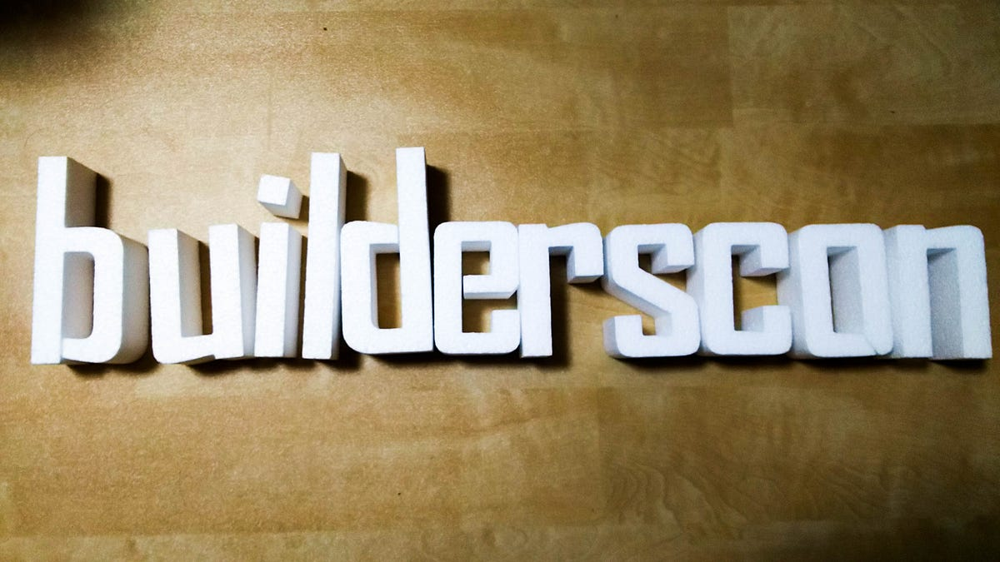

「知らなかった、を聞く」builderscon
「知らなかった、を聞く」builderscon
知らなかった、を聞く
「 知 ら な か っ た、を 聞 く 」
もしくは英語で “Discover Something New”。今後 builderscon のスローガンはこれで行くことにしました。

言語化できないもどかしさ
最初にbuildersconをやろう、と思った時から自分がやりたいカンファレンスの形は決まっていました。
これまで大切に育ててきたYAPC::Asia Tokyoのその先あるアレをやりたかった。でもアレってなんなのか分かっているのは自分だけだ。一緒にやろうと言ってくれる人達には言葉を尽くして説明を試みとは思うが、やはり一言で説明できると理解度が全然違う。
そんな状態で、自分の中でそのアレはなんなのかはっきり分かっていたのに思ったように言語化できない。なのでうまく伝えられない。大分もどかしかった。
これまでずっとカンファレンス運営をしてきて、最初は「○○言語の話が聞きたい」が自分のモチベーションだと思っていた。でも長くやってきてそれは同じタイプの人を呼び、同じタイプの話をリピートする事になることがわかってきた。それはそれで心地よいし、得るものもあるだろうけど、それを自分が主宰するエンジニアが集まるカンファレンスのテーマにしてしまう事には違和感を感じていた。
ともあれ、YAPCはYAPCなのでそのままYAPC::Asia Tokyo 2015の幕引きまでやってきたわけですが、これをbuildersconとして昇華させる段となってどうにかせざる状況になった。
アレが降りてくる
そんなある日、横浜のとあるレストランで話してたらようやく言葉が降りてきた。
「 知 ら な か っ た、を 聞 く 」
本当はこの前に微妙に違う何パターンかあったんだけど、推敲してこうなった。やっと「ああ、俺が作りたかったカンファレンスってこれだったんだ」って気づけた。
そうか、自分は技術者としての自分がワクワクする話を聞きたかったんだ。

別にそれはこれまでのYAPCでやってきたような「○○言語のチューニングの仕方」でもいいし、「○○フレームワークを実戦投入するさいに辛かった色々な話」でもいい。これまでトークを採択する際に使っていた方針は基本的に変えないので、これまでのYAPCで採択されていたトークはこれからも採択するだろう。
だけれども、このスローガンが降りてきてくれたおかげ、そのさらに一つ上のレベルで本質的に自分が聞きたかった話を定義することができると思う。それがWebの話であっても、特定言語の話であっても、ハードウェアの話であっても、技術者としての我々の心を熱くさせるモノを聞きたい！それを集めたカンファレンスをやりたい。そしてそれが継続的にまわる仕組みを考えたい。
第一回は12/3
というわけで第一回目は12/3、青山の Redbull Studiosでやらせてもらいます。
The very first builderscon conference will be held on Dec 3, 2016! While builderscon originated from a web-centric…builderscon.io
衛星の話、AIの話、Webの話、デザインの話などを集め、さらにトークの公募も行います。（多分）朝食も出します。そして懇親会もそのまま会場で行う予定！
9月頃からさらにドシドシ情報を出して行きますので、乞うご期待です。